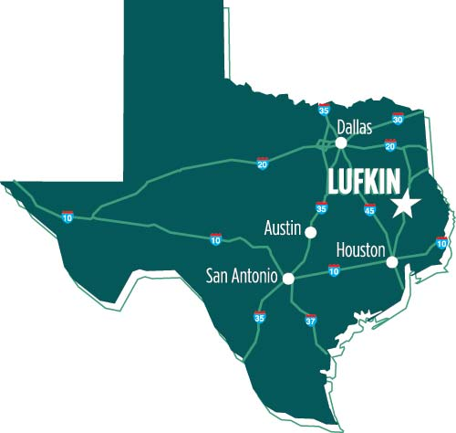
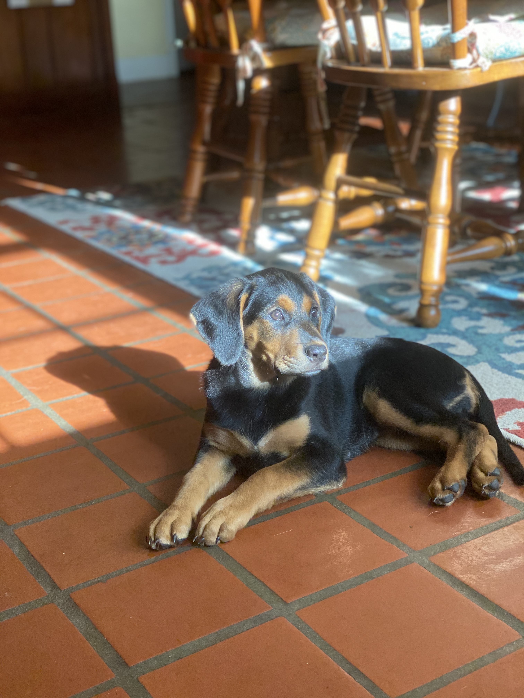
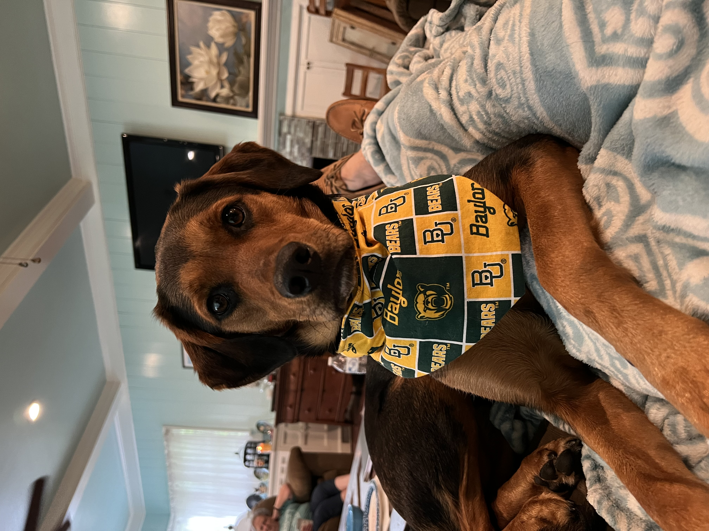
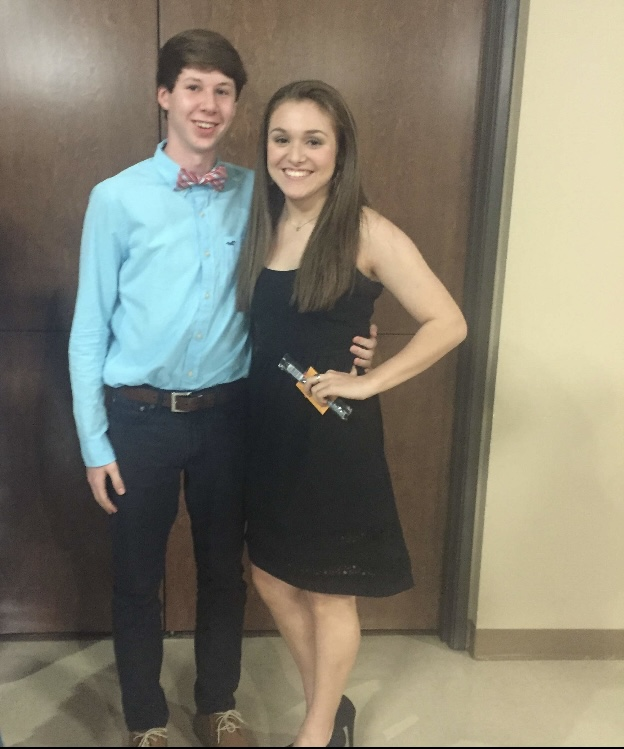
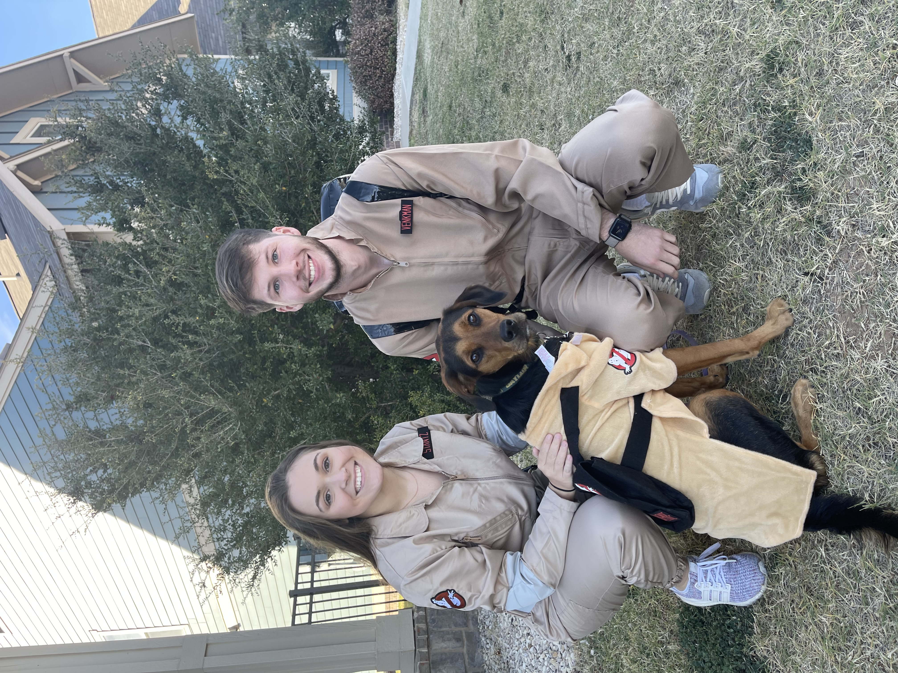
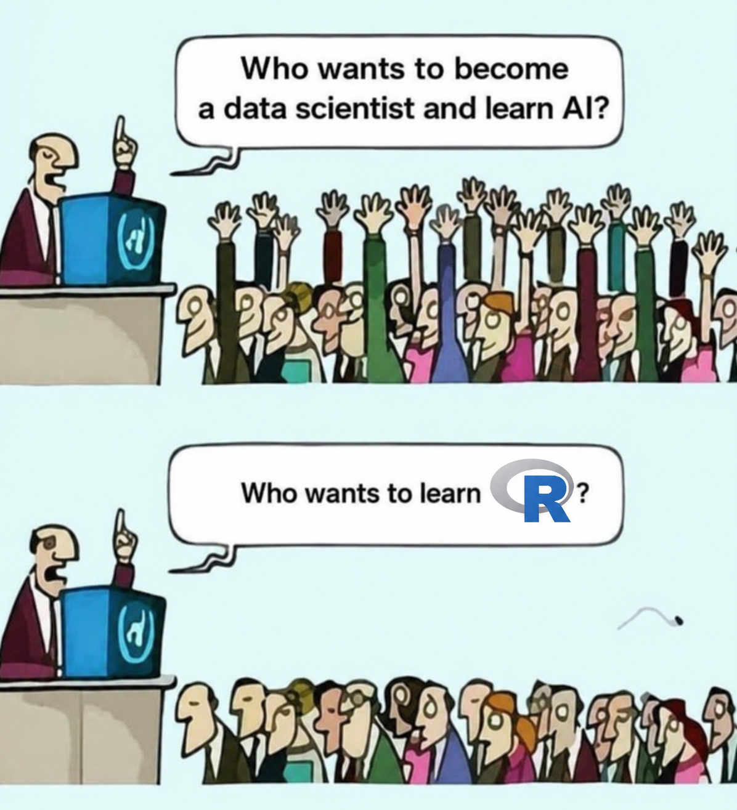
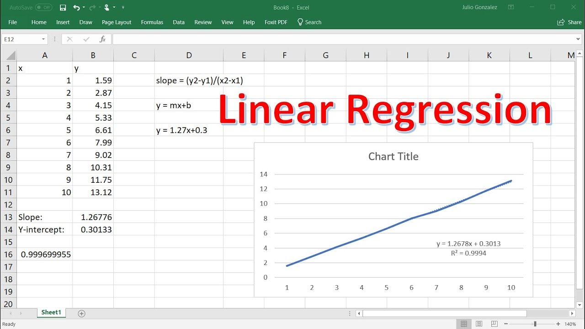

Introduction to SDS 320E
SDS 320E
About Me
- From Lufkin, Texas (East Tx)
- Undergraduate Education: B.B.A from Baylor University
- Majors: Statistics, Business Fellows (Honors), Finance, and Accounting
- Graduate School: PhD in Statistical Science from Baylor University

About Me Cont.
- Khali (Khaleesi)



About Me Cont.
- Fiance - Paxton


Syllabus
Software
- We will use the programming language to perform analysis.
- This is Statistics, why do we need a programming language?? 😐
- \(\Pr(\text{We flip a coin and get a head}) = 0.50\) requires programming?
- Statistics - the art of collecting, organizing, summarizing, and describing data as well as drawing inferences from the data.- Dr. Amy Maddox
- Statistics is math applied to real data This often referred to as data science
- Probability and math work in the background for statistics …
- But, modern statistics focuses on the data applications
- Statistical Modeling & Machine Learning/AI
- This was always the goal of statistics, but computing power limited it
- These modern methods require computer implementations i.e. often programming
Software Cont.

Why R?
- Microsoft Excel can perform many of the tasks we do

- However, Excel is primarily a spreadsheet editor and can only perform basic analysis
- Real data is messy and programming gives us flexibility to perform advance analysis
- Most students will list Excel as skill. A programming language will make you stand out ‼️
Why R? Cont.
- Python and R are the most sought after programming languages for hiring candidates
Why R? Cont.
- Why not Python if it’s more popular? 🧐
- Python is a “buzzword”. Most do not know what the langue actually entails.
- The language originated in computer science. It excels in software engineering and general scripting. This means it is a lot harder to learn.
- Python can perform a lot of statistical task (Way more than Excel). But it is not its primary purpose. The statistics options are not native to python.
- R was built by and for statisticians.
- It’s designed specifically for data analysis, modeling, and visualization out of box. It is much easier to learn. Especially for beginners
- R has an extensive network of packages for seamless and endless applications.
- Python struggles to match this without heavy setup.
R Basics
- In its simplest form, R is just a calculator.
- For example, to do 1 + 1, we simply type it in like a calculator.
- It also supports statistical functions out the box.
Understanding R and Rstudio
- R1 is a programming language and environment for statistical computing.
- Again, R is similar to an advanced calculator, but with no interface.
- You write code and it runs. But there’s no editor or additional tools for help.
\(\approx\) English
- Rstudio is an editor built for R
- Makes R more accessible, organized, and efficient. Rstudio provides:
- An interactive console editor for writing and saving code
- Panels for plots, packages, and variable environments
- Makes R more accessible, organized, and efficient. Rstudio provides:
\(\approx\)
About the Course
- Statistics is used to analyze anything that has data
Math & Statistics
Finance
Pharmaceuticals
Marketing
Economics
Genomics
Probability
About the Course Cont.
- Computer Science - the study of computation, information, and automation.
- All computations would have to be by hand without computer science
Math & Statistics
Computer Science
Programming
IT
Hardware Development
About the Course Cont.
Math & Statistics
Computer Science
Domain Knowledge
Disease Expertise
Drug Approval
Stock Valuation
Policy
About the Course Cont.
- In this course, we will be drawing from statistics, computer science, and real data to make informed and optimal decisions
Math & Statistics
Computer Science
Domain Knowledge
About the Course Cont.
- In this course, we will be drawing from statistics, computer science, and real data to make informed and optimal decisions
Math & Statistics
Computer Science
Domain Knowledge
AI &
Machine Learning
Quantitative
Analysis
Data Mining &
Software Development
\(P(X \leq 5) = \sum_{k=0}^{5} \binom{10}{k} (0.3)^k (0.7)^{10 - k}\)
SDS
Derik Boonstra, Ph.D.